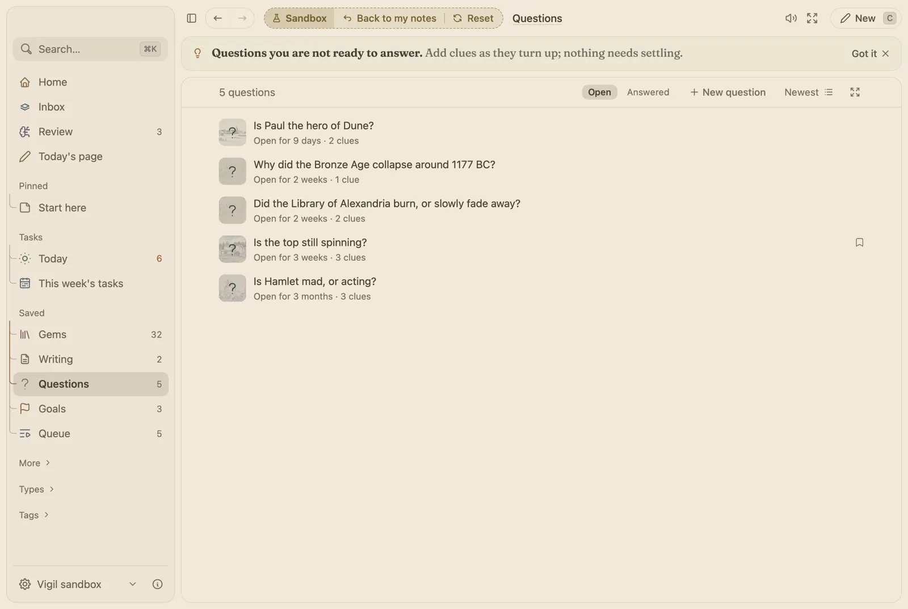

Hold a question open until it answers itself.
Research is mostly waiting for the clue that makes it click. Vigil keeps your open questions in one place, gathers clues under them and shows how your notes connect.

What you would use
- Questions you are holding. Keep a question open for weeks. Add a clue from quick capture with + and its name.
- Where it came from, and why. Every gem can keep its source and the reason it mattered, shown again in Review.
- When a finding turns out wrong. Write what is true and the old note stays, marked “Superseded”, so you can see what changed your mind.
- The Map. Every linked note as dots and lines, the busiest ones named.
- Bring it all in. Obsidian vaults and Notion exports with links kept, and Readwise and Kindle highlights.